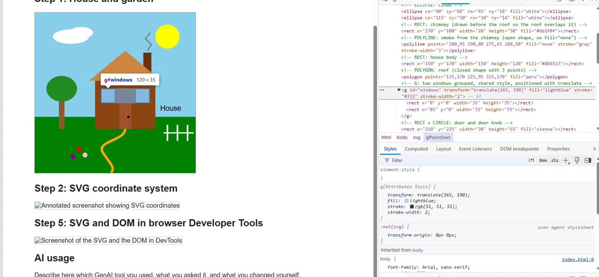
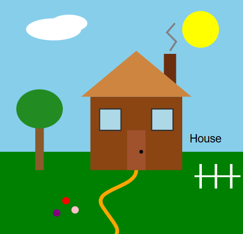

Exercise 4.1: Draw SVGs
Step 1: House and garden
Step 2: SVG coordinate system

Step 5: SVG and DOM in browser Developer Tools

AI usage
Describe here which GenAI tool you used, what you asked it, and what you changed yourself.
Exercise 4.3 - 4.6: Bar Chart
Exercise 5.1: Energy Consumption
Average energy consumption of 55-inch TVs
by screen technology.
Exercise 5.2: Average Electricity Price
Average Australian electricity spot price
from 1998 to 2024.
Exercise 5.3: TV Screen Size Distribution
Proportion of small, medium and large TVs.